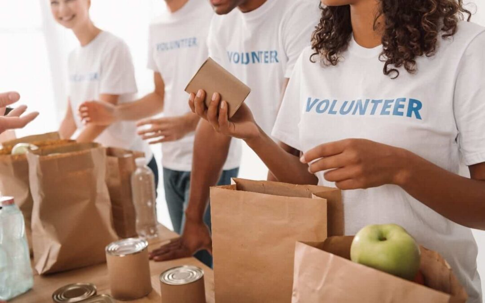
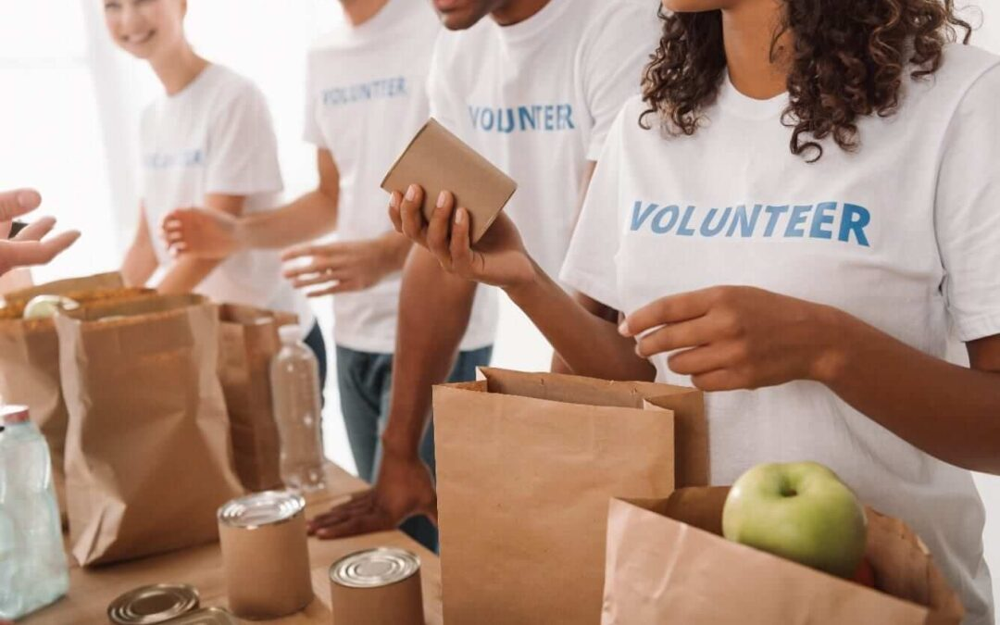

Bridging the Food Gap, One Affordable Meal at a Time
Not everyone has equal access to healthy, affordable food. Through simple, low-cost recipes and awareness, we can help make nutrition accessible for all.
Millions around the world face malnutrition not from lack of effort, but from lack of access. Our goal is to raise awareness and offer practical, budget-friendly recipes that make healthy eating possible for every household.
 
